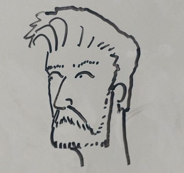

BUT WAIT.... there is more...
A little more about my background:

I don’t think four years ago I could have imagined that my life would be where it is at this moment. Four years ago I was sitting inside of an electronics repair shelter, tearing apart a server in the southern Spanish countryside, dreaming about where I was going to be when I got out of the Marine Corps. I wasn’t spending my time thinking which African country I might be operating out of in the coming weeks, but rather day dreaming about life as a college student. These overly romanticized dreams of growing a beard, moving to the city, walking into some Starbucks or cafe, sitting down with my laptop and sipping on coffee while hacking away at some sort project, constantly filled my thoughts. What I never really thought of was, “How far can you take it?”
Well, a few short years later, I feel like I’ve taken it pretty far. I’ve moved from the North Carolina, to Cleveland, and finally landed in here in Columbus. I started school as a business major, before finding out that my passion lies in IT, and switched majors. That turned out to be one of the best decisions, I could have possibly made.
I’ve moved from being a Marine constantly deployed or training, to bar tending in the big city, to graduating with a degree in Information Technology and becoming a Systems Administrator for the Department of Defense. Finally, I met the love of my life, and we'll be getting married in the beautiful mountains of Colorado.